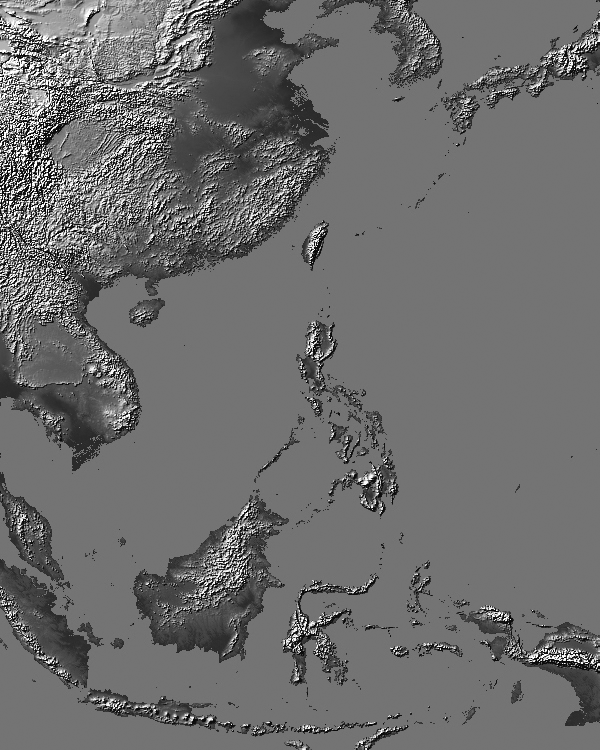
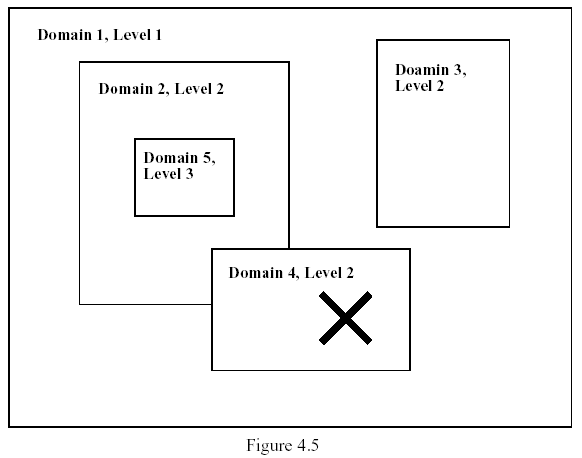

前置資料處理 - TERRAIN（地形地貌）
TERRAIN 的目的是將地表分類資料與地形高度資料結合，並按照所選定的地圖投影方式產生供模式後續使用的地形檔。
TERRAIN 建立地形地貌資料
若先前有建立過地形地貌資料，而在重新進行模擬時模式預報範圍的中心格點位置、格點數、網格間距不變的話就不必再次執行TERRAIN。
- 解壓縮 TERRAIN.tar.gz：
tar –zxvf TERRAIN.tar.gz - 下載必要之地形、地表分類資料：
- 地表分類等資料 - ftp://ftp.ucar.edu/mesouser/MM5V3/TERRAIN_DATA/
- 地形高度（Digital Elevation Model, DEM）資料 - https://dds.cr.usgs.gov/srtm/
- 由於這些資料檔案不小，若您為工作站管理者可以考慮讓大家採用
ln -sf連結的方式共用同一份資料以節省儲存空間 - 這裡的地形資料檔是以區域劃分儲存為不同檔案，以我們最常用的東亞 30 度角秒來說，使用的是 e100n40.dem.zip 這個檔案，它指的是東經 100~140 度，北緯 -10~40 度這塊區域的地形檔，詳細的區域劃分可以看網站中的 srtm30_documentation.pdf，裡面有詳細的說明。或者是下載對應的 e100n40.gif.zip 來看繪製出來的 gif 圖（如下），相信這會讓你對所需區域更有概念。 
- 編譯 TERRAIN：
make &> LOG - 生成 terrain.deck 腳本檔：
make terrain.deck 照需求修改 terrain.deck：
terrain.deck 是一個 c-shell 腳本，用來輸出設定檔給 Fortran 使用，是故檔案中開頭有 "C"、"#" 或是 ";" 的部份都可以視為備註，以下節錄可能會改動到的部份。# -------------------------------------------------------------- # 1. Set up parameter statements # -------------------------------------------------------------- cat > src/parame.incl.tmp << EOF C IIMX, JJMX 為模式本身 X/Y 方向上所容許的格點數最大值, 格點總數 NSIZE = IIMX*JJMX PARAMETER (IIMX = 400, JJMX = 400, NSIZE = IIMX*JJMX) EOF cat > src/paramed.incl.tmp << EOF C ITRH, JTRH 為地形資料的最大格點數 C NOBT = ITRH*JTRH, here assuming C ITRH= 270 ( 45 deg. in north-south direction, 10 min. resolution) C JTRH= 450 ( 75 deg. in north-south direction, 10 min. resolution) # 以上面這個例子來說，若採用每 10 角分一筆地理資料，60 角分為 1 度，範圍共45度，所以 ITRH=45*6。 # 若你用的是 30 角秒的資料，那就要把這個參數設大一點。若遇到格點數不足的狀況他會提醒你： # THE DIMENSIONS OF DATA IN I AND J ARE 876 888 # THE DECLARED DIMENSIONS ITRH,JTRH IN DECK ARE 500 500 # INCREASE THESE DIMENSIONS AND RERUN # 此時再把 ITRH 跟 JTRH 設定成他要的大小就好。 PARAMETER (ITRH = 500, JTRH = 500, NOBT = ITRH*JTRH) C PARAMETER (ITRH = 1500, JTRH = 1800, NOBT = ITRH*JTRH) EOF # -------------------------------------------------------------- # 2. Set up NAMELIST # -------------------------------------------------------------- PHIC = 24.6, ; 模式中心緯度 (minus for southern hemisphere) XLONC = 122.3, ; 模式中心經度 (minus for western hemisphere) IPROJ = 'LAMCON', ; 投影方式，預設為蘭伯特保角投影（LAMBERT-CONFORMAL） ;IPROJ = 'POLSTR', ; POLAR STEREOGRAPHIC MAP PROJECTION ;IPROJ = 'MERCAT', ; MERCATOR MAP PROJECTION MAXNES = 1, ; 標明本次有幾個 Domain，標明 N 則表示後面所有參數僅前 N 組有效 NESTIX = 301, 49, 136, 181, 211, 221, ; Y 方向上格點數 NESTJX = 271, 52, 181, 196, 211, 221, ; X 方向上格點數 DIS = 2., 30., 9., 3.0, 1.0, 1.0, ; 網格間距(km)，以三倍變化 NUMNC = 1, 1, 2, 3, 4, 5, ; 標明其上一層 Domain 是誰 NESTI = 1, 10, 28, 35, 45, 50, ; 該 Domain 最左下角的點位在上一層 i 方向的 哪一點上，此設定表示 D02 位在 D01 中 i = 10 之處，D03 位在 D02 中 i = 28 之處...以此類推 NESTJ = 1, 17, 25, 65, 55, 50, ; 同上，但是為於j點之位置 RID = 1.5, 1.5, 1.5, 3.1, 2.3, 2.3, ; 客觀分析時的影響半徑，於 (IFANAL=T) 時才會生效 NTYPE = 6, 3, 4, 6, 6, 6, ; 輸入資料的解析度，請參照下表 ; ; 1: 1 deg (~111 km) global terrain and landuse ; 2: 30 min ( ~56 km) global terrain and landuse ; 3: 10 min ( ~19 km) global terrain and landuse ; 4; 5 min ( ~9 km) global terrain and landuse ; 5; 2 min ( ~4 km) global terrain and landuse ; 6; 30 sec ( ~.9 km) global terrain and landuse ;注意：MM5 Domain 不能重疊，只能一個包一個：
以上圖為例，NUMNC 應該就要設定為（此處不列出錯誤的 D04 與之後的 D05）： NUMNC = 1, 1, 1
Domain 1最大，故一定是 1，Domain2 上一層為 Domain1，Domain3 也在 Domain1 中，故兩者皆為 1，以此類推。製作地形資料：
./terrain.deck
TERRAIN執行後會有三種輸出檔，分別為：- 一個預覽用的 TER.PLT 圖形檔（如果有安裝 NCAR 的圖形包）可用
idt TER.PLT檢視各 Domain 的地形、地表分類等等。 給模式用的二進位檔 TERRAIN_DOMAIN1、TERRAIN_DOMAIN2 等等。
執行 terrain.exe 後得到的紀錄檔 terrain.print.out，當程式正常執行，你將會在terrain.print.out 末尾看到：
= = NORMAL TERMINATION OF TERRAIN PROGRAM = =
若程式執行失敗，你也會在上述檔案中看到錯誤訊息。
- 一個預覽用的 TER.PLT 圖形檔（如果有安裝 NCAR 的圖形包）可用
常見問題
若在製作 30s 的地形時遇上問題，其中一個可能原因就是有缺檔或 30 秒的檔案有問題所造成的，最可能會出現的錯誤訊息是：
RECORD = 7411, ERROR OCCURED ON UNIT: 31
解決方法：
- 檢查 ftp30s.out 看看有沒有缺檔的相關訊息，可能會缺 E100N40.DEM 這類檔案。 如果是的話，到 ftp://edcftp.cr.usgs.gov/data/gtopo30/global/ 抓你要的地形檔， 這裡的地形檔是以區域劃分，不同區域的資料分開放，只要抓 ftp30s.out 裡面抱怨有缺的檔案即可，也可以參考上面的 tiles.gif 來抓檔案。
- 如果步驟 1 沒辦法解決問題，請清空 TERRAIN/Data30s/資料夾、TERRAIN/Data/ 下的 30sec 資料檔，以及兩個 new_30sec* 檔試試看。
- 連到 ftp://ftp.ucar.edu/mesouser/MM5V3/TERRAIN_DATA/ ，將所有（或是會用到的）30 秒資料檔抓下來後上傳放到 TERRAIN/DATA/下然後解壓縮（請記得以二進位資料傳輸，不知道怎麼做的話可以直接用瀏覽器開，然後用 FTP 軟體丟上伺服器）。
- 到 terrain.deck 裡 ftpdata 設為 true，Where30sTer 設為 ftp（電腦會自動搜尋 Data、Data30s 資料夾，裡面有資料就不會抓）。
- 再次執行 terrain.deck 即可